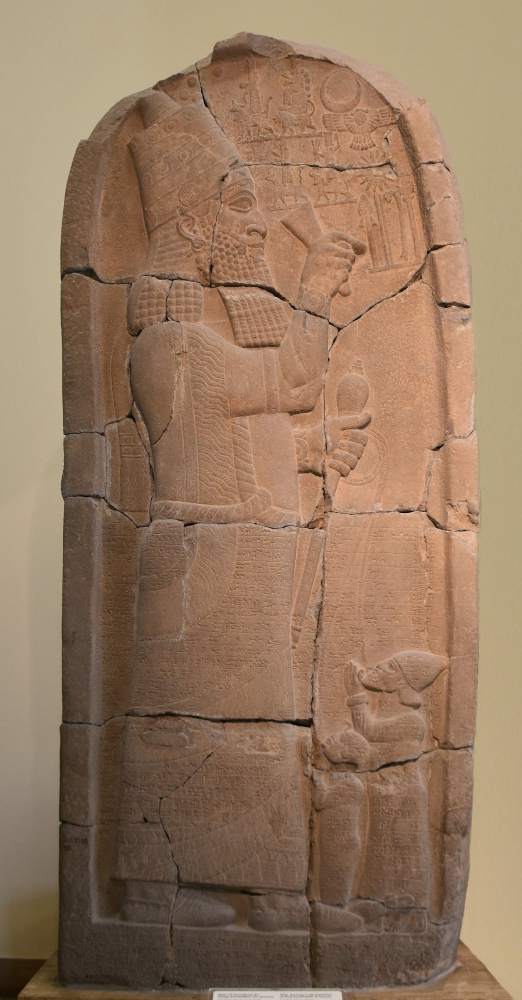

Victory Stele of Esarhaddon

- Find Name
- Victory Stele of Esarhaddon
- Description
- A dolerite stele, 3.46 meters tall, carved about 670 BC to commemorate Esarhaddon's conquest of Egypt. Found in 1888 at Zincirli Hoyuk (ancient Sam'al) by Felix von Luschan and Robert Koldewey, it is now in the Pergamon Museum, Berlin (VA 2708). Its relief shows Esarhaddon holding a mace, with ropes through the lips of two kneeling captives; its inscription recounts the second campaign against Pharaoh Taharqa, the capture of Memphis in 671 BC in half a day, and the deportation of Taharqa's family, including Prince Ushankhuru. Esarhaddon's inscriptions also name Manasseh of Judah among the vassal kings who paid him tribute.
- Historical Period
- Iron Age II
- Evidence Class
- Direct
- Interpretations
- The stele is contemporary proof of Esarhaddon's Egyptian conquest and of Judah's vassalage under Manasseh - Esarhaddon is one of the few Assyrian kings named in the Bible (2 Kings 19:37; Isaiah 37:38; Ezra 4:2). One caution: the identity of the larger captive is debated - Ba'al I of Tyre, Abdi-Milkutti of Sidon, and Taharqa himself have all been proposed - so the relief should be described with that debate noted, not as a settled portrait of the king of Tyre.
- Alternative Names
- Zenjirli Stele; Zincirli Stele; Senjirli Victory Stele
- Related Places
- Related Books
- Related People
- Scripture Illuminated
- Biblical Significance
- It commemorates the conquest of Egypt by the Assyrian king the Bible names as Sennacherib's successor, and it confirms Manasseh's Judah as a tribute-paying vassal of that empire.
- Artifact Date
- c. 670 BC
- Current Location
- Pergamon Museum (Vorderasiatisches Museum), Berlin
- Date Discovered
- 1888
- Discovery Location
- Zincirli Hoyuk, Turkey (ancient Sam'al)
- Timeline Era
- Divided Monarchy
Awaiting Review Not yet checked against scholarly sources. Treat its claims as provisional until this entry is reviewed. About verification
Last reviewed: not yet reviewed